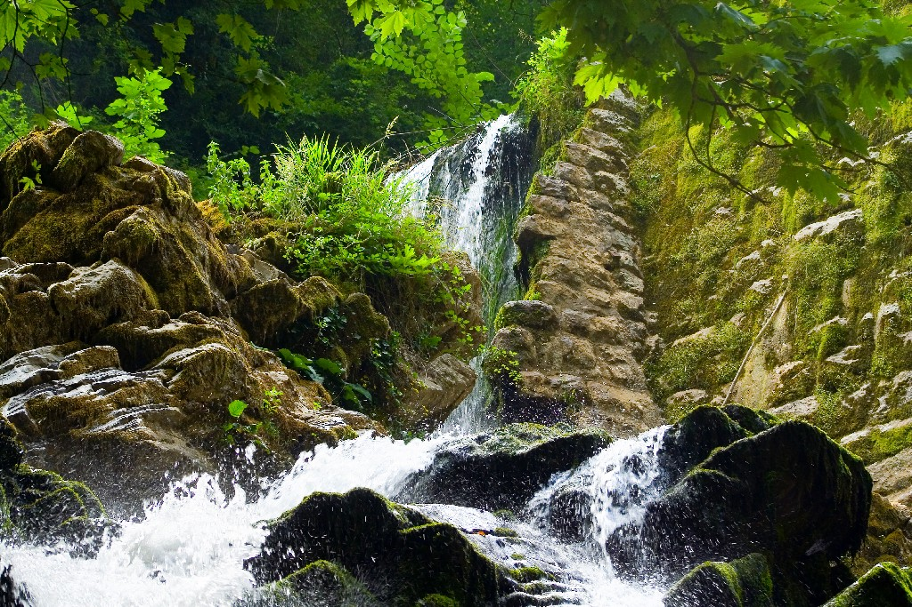

Maden Deresi, Sakarya'nın Karadeniz kıyısında yer alan Kocaali ve Karasu ilçeleri arasında yer alır.
Bazen Kocaali bazen de Karasu topraklarında aktığı görülür. Kaynağını Çam Dağından alır, kuzeye doğru akışa geçer. Uzunluğu 30 km'dir.
Maden Deresi yukarı çığırında yer alan kayaları fiziksel olarak parçlayarak çakıl taşları oluşturur. Bu çakıllar Kuyumcullu Köyü çevresindeki çakıl ocaklarından toplanarak inşaat malzemesi olarak kullanılır.
Aşağı çığırında kalker bloklarını derince aşındırarak orijinal bir kanyon vadi oluşturmuştur. Kanyonun kenarları oldukça dik ve yüksektir. Bu durum yazın aşırı sıcaklarında bile kanyon vadinin tabanının oldukça serin olmasına yol açar.
Oluşan nehir, gür ağaçlık alan, serin hava insanları doğa ile başbaşa bırakır. Yakın ve uzak çevre için ideal bir piknik, dinlenme alanı oluşturur.
Maden deresi Karadeniz ormanlarının nemcil türlerinden kayın, gürgen, kestane, meşe, çınar, kavak ormanları ve fındık bahçeleri ile çevrilidir. Maden deresi çevresi doğa yürüyüşü ve doğa fotoğrafçılığı acısından da önemlidir.
